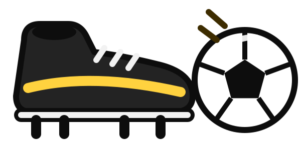
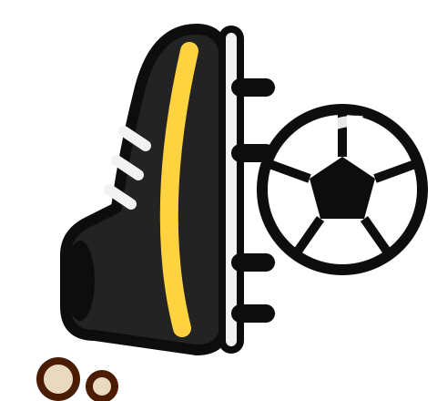

⚽Rechte Hand: im Kreis ziehen – je weiter weg, desto schneller

Schuss: mit Ball halten = Zeitlupe zum Zielen, loslassen = Schuss
Grätsche: ohne Ball – im eigenen Strafraum darfst du fangen!Sprint: halten = schneller (3 s), dann kurz ausruhen
↕Trick: hoch-runter-hoch = Gegner wird schwindelig
↔Lupfer: rechts-links-rechts = Ball über den Gegner